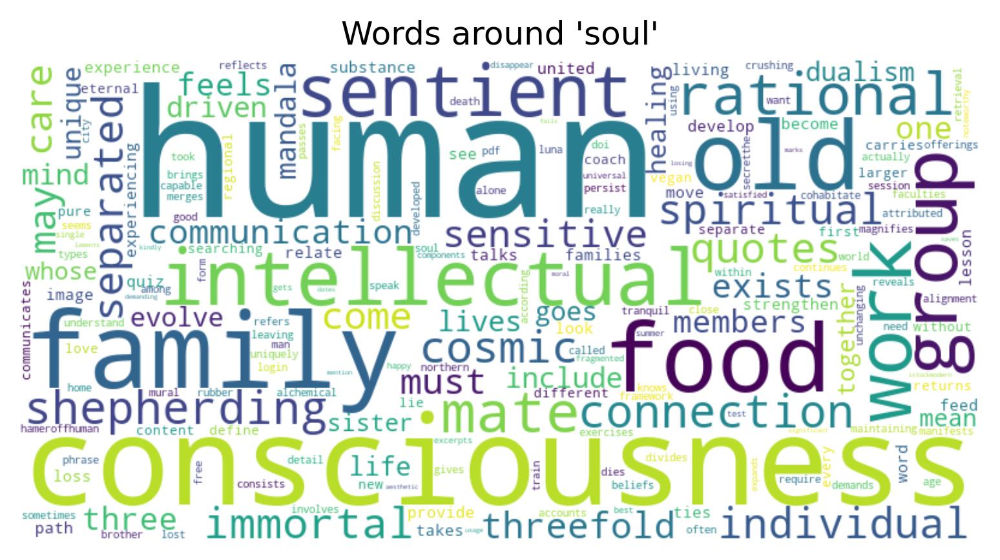
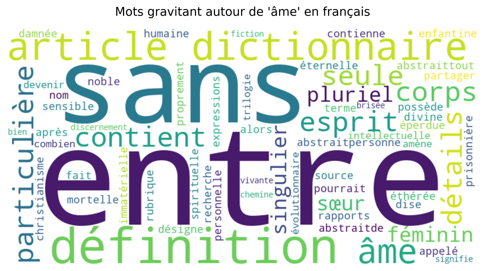

OBJECTIF : observer les variations du mot "soul" en anglais (âme) et comparer l'anglais avec le fançais (cf. "Projet-PPE-ame", projet 2025).
Bienvenue au sein de ce projet 2026. En effet, j'avais déjà travaillé sur un même projet en 2025, au semestre 7 du Master 1 TAL (Traitement Automatique des Langues). Le projet de 2025 auquel j'ai participé, était un travail collectif réalisé avec deux membres de deux universités différentes. L'objectif du projet 2025 avait comme sujet d'étude la polysémie du mot "âme" à travers trois langues dont le français (langue que j'ai étudié), le russe et l'arabe.
Aujourd'hui en 2026, j'ai crée un nouveau projet, une suite de ce projet 2025, qui s'appelle "PPE - Anglais (soul) et Français (âme)". Ce projet 2026 consiste à reprendre le travail de 2025 sur le mot "âme" en français et en ajoutant une l'anglais dont la traduction de "âme" est "soul". Etant donné que le travail du français a déjà été établi, je m'intéresserais au mot anglais "soul".
Le mot "âme" en français :
On avait constater dans le projet 2025 que le mot "âme" serait intéressant car il désignerait plusieurs sens en français.
Rappel du projet 2025 : Le terme "âme" en français peut être employé dans plusieurs domaines tels que la science ou la spiritualisation par exemple. De plus, ce mot contient également plusieurs définitions. Selon le CRNTL (Centre National de Ressources Textuelles et Lexicales, 2012), le mot "âme" signifie d'abord, "un principe de vie" transcendant à l'humain (la spiritualité...) ; la seconde définition porterait sur le "pantone immanent à l'homme" (le principe de vie et de pensée ou les expressions comme "l'état d'âme" ou encore "vague à l'âme") et la dernière connotation est plutôt "technique et technologique" par exemple, en musique on peut dire "âme d'un instrument à cordes".
Lien de la source CNRTL : https://www.cnrtl.fr/definition/%C3%A2me
Le mot "soul" en anglais :
Qu'en est-il du mot "soul" en anglais ?
D'après la définition du mot "soul" selon le site wordreference (lien du site : https://www.wordreference.com/enfr/soul. Le mot "soul" aurait 4 définitions et s'emploie à la fois comme un nom et un adjectif selon les contextes.
- La partie immortelle d'une personne ("immortal part of a person" ; exemple : "When you die, your soul goes to heaven" - Quand tu meurs, ton âme va au paradis");
- La profondeur émotionnelle d'une personne ("emotional side of a person" ; "I love you with all my heart and soul" - "Je t'aime de tout mon coeur et de toute mon âme");
- Sens figuré : il s'agit de l'énergie émotionnelle (She puts a lot of soul into her art." - "Elle met toute son âme dans son art.");
- Un genre de musique ("soul music: mix of funk and blues");
Cette définition permettra de voir quelles URLs contiendraient ses variations de sens. Cependant, on se concentrera principalement sur les 3 premières défintions car le type de musique ici est peu pertinent pour notre sujet d'étude étant donné que c'est un genre de musique.
HYPOTHÈSE :
Le mot "âme" en anglais se traduit par le mot "soul". On suppose que le terme "soul" serait employé dans des contextes philosophique et psychologique comme le mot "esprit" en français par exemple (mot étudié au premier projet de PPE1). Le mot "soul" s'employerait comme un adjectif, par exemple : "the human soul" (où l'adjectif "human" se trouve devant le nom "soul") ou "He was a famous soul singer" (où l'adjectif "soul" se trouve devant le nom "singer").
Pour répondre à notre hypothèse, on va récupérer 50 URLs qui contiennent le mot étudié "soul" en anglais. On s'interessera au nombre d'occurrences du mot cible ("soul") et les contextes (droite et gauche) pour observer les variations de sens du mot, dans quelles contextes phrastiques est-il employé et combien de fois il apparaît.
Ce projet comporte :
- Une analyse du mot en anglais contenant un tableau HTML créé à partir de plusieurs scripts bashs : un tableau recueillant des données telles que les liens URLs, le nombre de mots de chaque URLs, le nombre d'occurrences du mot cible ("soul") et d'autres métadonnées telles que les occurrences du mot "soul", le texte brut de chaque URL, des concordances ainsi que les contextes où apparaissent le mot étudié.
- Une analyse du mot en français qui recueille également les mêmes données que celui de l'anglais mais pour le mot "âme" (il s'agit, pour cette partie, d'une copie du projet de 2025).
- Un nuage de mot pour chaque analyse afin d'observer quels sont les mots voisins, soit les mots gravitants autour du mot cible.
- Une conclusion visant à décrire les résultats et à répondre à notre hypothèse sur l'anglais et sur les deux langues.
Analyse en anglais (Soul)
Tableau présentant les métadonnées pour le mot "soul" en anglais :
Nuage de mots pour le corpus anglais :

Dans le nuage de mots, on observe de nombreux termes qui gravitent autour du mot cible "soul" pour l'anglais. On remarque qu'il y a plus de mots voisins ayant comme catégorie "nom" comme "human" (humain), "family" (famille), "food" (nourriture), "consciousness" (conscience) ou encore "group" (group). Les noms qui ressortent le plus montrent que le mot cible "soul" est très fréquement employé à côté de ces mots.
On retrouve également, des verbes conjugués tels que "separated" (séparé), "goes" (va), ou encore "come" (viens). Le terme "soul" est aussi proche de ses mots voisins.
En outre, on remarque la présence de quelques adjectifs comme "intellectual" (intellectuelle), "sentient" (conscient), "old" (vieux) ou "rational" (rationnel). Le mot "soul" apparaît aussi près de ces mots voisins dans certains contextes et on peut donc supposer que "soul" se comporterait aussi en nom. On peut dire que cette analyse confirme la cette deuxième observation sur les adjectifs.
On retrouve le mot "soul" notamment dans les thèmes de spiritualisation ou de religion, mais aussi dans les domaines de la psychologie et de la phylosophie avec des URLs qui expliquent ou donnent des définitions sur le terme "soul". Mais ce mot s'étend dans d'autres thèmes comme le travail ("work" dans le nuage de mots) par exemple. En effet, durant la recherche d'URLs, le mot "soul" apparaissait dans des phrases idiomatiqiues par exemple "travailler avec coeur et âme" qui désigne un dévouement et une passion dans son travail, c'est-à-dire "être enthousiasme et engagé" dans ce qu'il fait. Le mot "soul" peut être employé dans des contextes de nourriture ("food") pour certains URLs trouvés et d'après le visuel du nuage de mots.
On suppose donc que le mot "soul" est plus fréquemment employé près des noms et notamment dans les thèmes de la religion ("human", "consciousness", "sentient", "intellectual",...) mais il apparait aussi beaucoup dans des expressions idiomatiques ("food", "work") dans les champs du travail et de la nourriture.
Analyse en français (Âme)
Tableau présentant les métadonnées pour le mot "âme" en français :
Nuage de mots pour le corpus français :

Tout comme l'anglais, il y a de nombreux mots qui gravitent autour du mot cible "âme" pour le français. Le terme "âme" a de forts voisins ("sans" et "entre") qui sont des prépositions. Par "fort", on entend par là que "âme" est très fréquement utilisé dans des contextes, près des mots "sans" et "entre" contrairement aux mots faisant références à des contextes de définitions (définition", "article", "dictionnaire")
D'autres mots voisins de catégorie verbe sont proches aussi du mot "âme" ("contient", "pourrait", "appelé") bien que "âme" soit moins présent avec eux. Les mots "particulière", "seule" et "sensible" sont des adjectifs et les mots ayant comme catégorie nom ("corps", "esprit", "âme", "divine",...) aussi qui gravitent autour de "âme". Cela montre que "âme" apparaît souvent dans des sujets de spiritualisation. On relarque dans le nuage de mots que "âme" est présent dans des contextes de religion ("christianisme", "divine", "éternelle") et de psychologie ("recherche", "personnelle", "intellectuelle", "vivante").
Ainsi, on suppose que le mot "âme" évoque généralement une transition, une sorte de passage entre deux aspects ("entre"). L'emploi du "sans" ferait référence à l'usage comme par exemple, la privatisation ("sans âme", cf. concordancier de l'URL 4). Ces exemples répondent donc à une des définitions du mot "âme" sur la notion d'usage (cf. présentation du projet). On peut relever que le mot "dictionnaire" dans le nuage de mot démontre bien qu'on a tendance à définir l'"âme".
Durant les recherches d'URLs, j'ai pu observer que le mot étudié était souvent présent dans les contextes religieux et psychologiques. On retrouve donc beaucoup d'occurrences dans ses domaines. Le concordancier permet d'illustrer les différents contextes d'utilisation du mot d'étude. On peut noter qu'on retrouve "âme" aussi dans les expressions figées ("expressions"), dans la science et en philosophie ("personnelle", "vivante"). Le mot revient souvent en tant que question, en étant comparé avec la notion d'esprit ou de pensée, et ait généralement défini par les auteurs dans les URLs.
Conclusion
Ce projet répond donc à notre hypothèse (cf. Présentation). En effet, le mot "soul" est employé dans des contextes phylosophiques et psychologiques mais, il ne s'arrête pas là. Il est aussi présent dans divers domaines comme la religion et le travail, notamment dans des expressions figées. On remarque également que le mot "âme" du français suit plus ou moins la même variations que le mot "soul" en anglais. Pour ces deux langues, le mot apparait très fréquemment dans des contextes de religions ou de spiritualisation. Mais les mots voisins de "soul" appartiennent à des catégories noms et adjectival tandis que pour le français, "âme" est plus proches des prépositions.